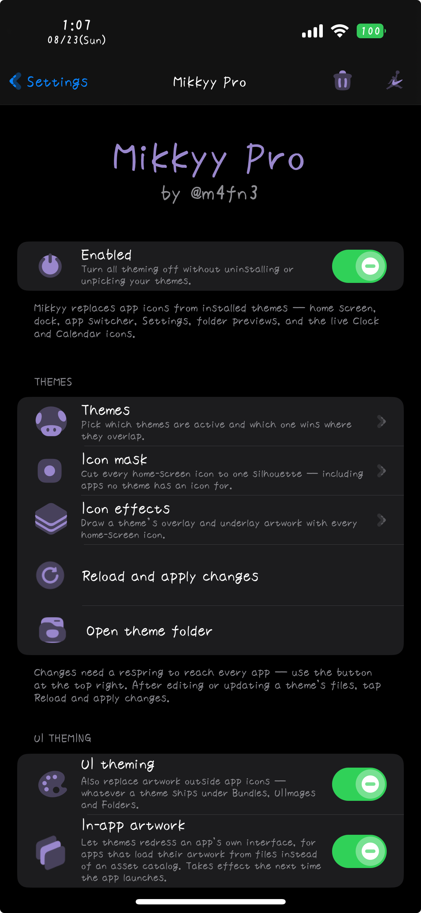
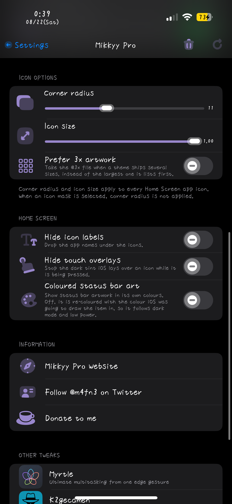
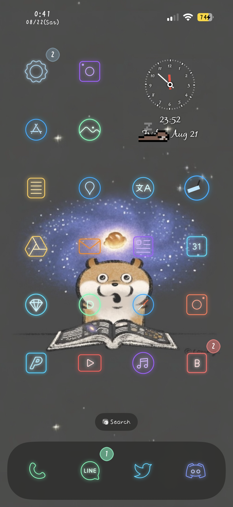
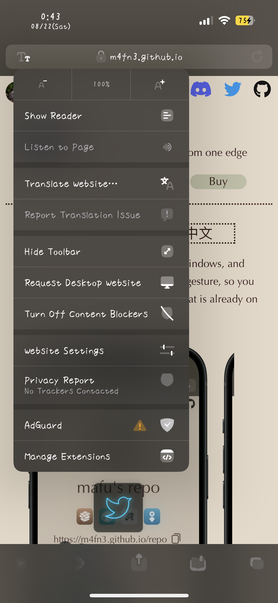
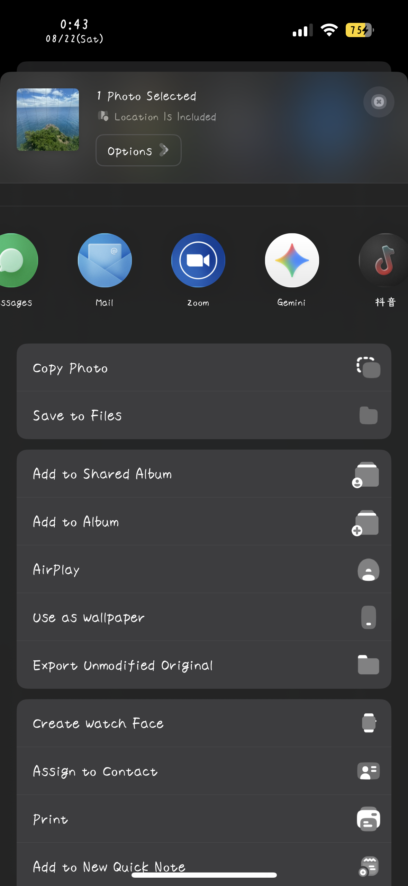
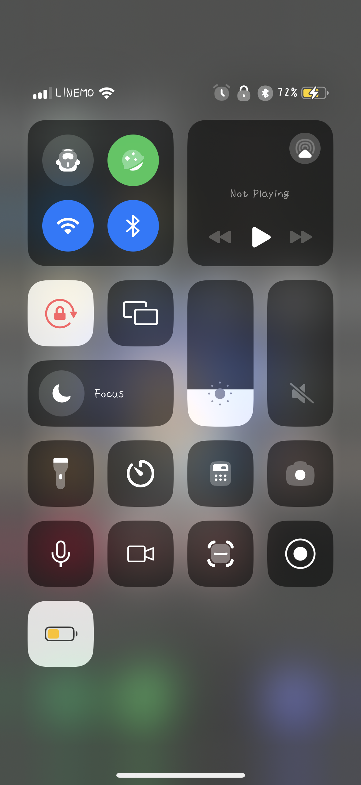

Home
Mikkyy Pro is the modern, lightweight interface theming engine. App icons, System glyphs, Settings rows, Control Center, Icon Badge, the status bar, and artwork inside apps can be themed.
Mikkyy itself is free and themes app icons everywhere iOS shows them. Pro is the same engine with everything beyond app icons unlocked. Installing Pro replaces the free package and keeps your settings.
Large themes stay fast. Mikkyy reads a theme's contents once and reuses artwork it has already drawn, so even a theme with thousands of images does not slow down app launches or the Home Screen.






iPhones running iOS 17 on rootful, rootless, roothide.
Other iOS versions are planned for a future update.
Existing SnowBoard themes can be used as they are. SnowBoard itself must be removed first.
Use the “Buy” button above to open the checkout page, then review the purchase details carefully.
PayPal and credit cards are accepted.
* For customers from China: Some domestic chinese credit cards cannot be used on my checkout platform. To pay with Alipay or another Chinese payment method, please purchase through the authorized reseller: add WeChat henan-0318 and ask about Mikkyy Pro. A small handling fee applies.
* One license covers up to 2 devices owned by you. Licenses are not transferable or shareable.
1. Purchase a license and copy your license key.
2. Add this repository, then install Mikkyy Pro. It replaces the free Mikkyy if you already have it.
3. Open Mikkyy from the Settings app.
4. Enter your license key and activate the tweak.
* After an update, activation must be refreshed, but the key does not need to be entered again.
5. Install themes from Sileo or a .deb, or place theme folders yourself in: /var/jb/Library/Themes
6. Turn Mikkyy on, choose a theme, and set the options you want.
7. Tap “Reload themes from disk” to apply.
* For activation help, contact @m4fn3 on Twitter or email m4fn3q@gmail.com.
* One license covers up to 2 devices owned by you. Licenses are not transferable or shareable.
Everything the free Mikkyy does — themed app icons on the Home Screen, dock, App Switcher, share sheet, the app list in Settings, folder previews and the App Library, plus the live Calendar date and the live Clock face and hands — and then the rest of the interface.
Your theme can theme interfaces like:
・Settings rows — Wi-Fi, Bluetooth, Battery, and the rest
・Global system glyphs
・Control Center modules and tiles
・Share sheet action icons
・Switch and slider knobs
・Message bubbles, for themes that replace them
Option: UI theming has its own switch, so you can keep the themed app icons and leave the rest of the interface stock.
The battery, the signal bars, and the Wi-Fi indicator take your theme's artwork.
The themed battery still behaves like the real one: it turns red when low and yellow in Low Power Mode, shows the charging bolt, and keeps the percentage readable. Control Center's battery is themed to match.
Option: “Coloured status bar art” keeps a theme's own colours instead of tinting the artwork to the system colour.
Pick a mask and every Home Screen icon is cut to that shape — circles, squares, or anything else the mask defines — including apps your theme has no icon for, so the whole screen stays consistent.
If the theme you are using ships its own mask, it is used automatically. Folder backgrounds are cut to the same shape.
Icon masks take precedence over corner radius, so if a mask is selected, the corner radius option is ignored.
A theme that ships badge artwork replaces the red count bubble, and the count text takes the theme's own styling.
Icon effects — overlay, underlay, and shadow artwork drawn with every Home Screen icon — apply from themes that carry them, in the same layout SnowBoard and Anemone use. An overlay sits on top of the icon, an underlay behind it, and a shadow spills past the icon's own bounds.
Option: effects are picked from one theme at a time in “Icon effects”, rather than layered like icon artwork.
・Corner radius — round the icons more or less than normal iOS does
・Icon size — adjust icon size smaller
・Hide icon labels — drop the names under the icons
・Hide touch overlays — remove the dimming iOS draws while an icon is pressed
・Prefer 3x artwork — use the sharper artwork when a theme ships more than one size
Corner radius is ignored while an icon mask is selected, since the mask decides the shape.
Some themes dress the inside of a particular app, not just its icon. Turn on “In-app artwork” and that artwork applies while you use the app.
Option: off by default — turn it on only if your theme includes this kind of artwork.
Use a single theme, or leave the picker on “All themes (layered)” to keep every installed theme active at once, with the first match winning.
“Reload themes from disk” applies a theme you added, edited, or switched to.
The master switch turns everything off and puts stock icons back, without uninstalling anything.
Refunds are accepted only if a user reports that the main functionality of the tweak does not work at all on iOS versions explicitly listed as supported on the website within 48 hours of purchase, and I cannot provide a fix within a reasonable amount of time. If you meet these conditions and want to request a refund, please send a message with your device information, details of the problem (with a screenshot or screen recording), and purchase information.
9/2 - v1.0.2: - New: data collection mode for theme authors — writes every themeable image out as a ready-to-paint theme skeleton, matching SnowBoard's collector layout
- New: the live Calendar icon's date text now supports size and position adjustment
- New: compatibility for themes whose folder is named with a short bundle name
- Improved: themed glyphs are sharper and rendered at the correct size
- Improved: status bar theming, including the battery
- Improved: theming of the Settings row icons and the share sheet icons
- Improved: the Clock icon now receives icon effects and Custom Icon Size like the other icons
- Improved: small-icon scaling and icon drawing performance
- Fix: themed glyph colours across light and dark appearance
- Fix: themed glyphs now fit correctly inside the stock symbol box
- Fix: unintended theming of some Lock Screen glyphs
8/22 - v1.0.1: - New: icon badge support — a theme that ships badge artwork replaces the red count bubble
- New: icon effect support — a theme's overlay, underlay, and shadow artwork is drawn with every Home Screen icon
- New: the theme folder is created on install when it does not exist
- Added a compatibility layer for older themes that name their passcode art <digit>Passcode
- Fix: the dialler's call button was not themed
- Fix: a potential crash in status bar theming on dual-SIM devices
8/21 - v1.0.0: First release